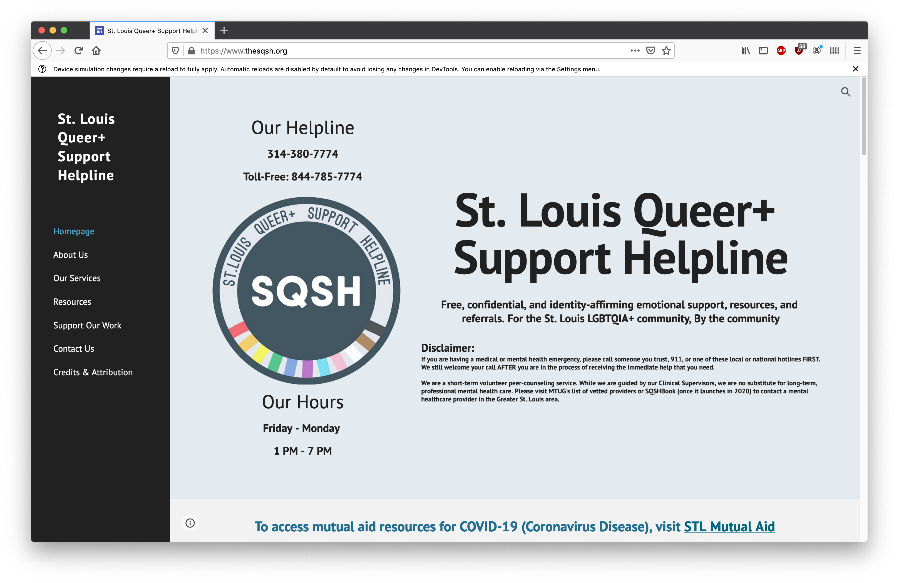

Project 2: Layout Framework Implementation
By Miles Lee for the Layout Systems course at WashU
Website to re-make: the SQSH
Framework: UI Kit
The SQSH, or St. Louis Queer+ Support Helpline, is a project started by Luka Cai, a friend and WashU senior (2020), which aims to support the St. Louis LGBTQIA community via "free, confidential, and identity-affirming emotional support, resources, and referrals."
Over the summer, I worked with Luka and the website team to launch the site. I wasn't there for the initial stages of the site, and when I started working with them on it, they'd already built most of it in Google Sites. I'd never worked with Google Sites and found it rudimentary and frustrating to use. Currently, it's still hosted on Google Sites and isn't the greatest to read or navigate. SQSH is currently thinking of re-vamping their website, so I hope building this might help the process.
The site has a lot of different information that could be presented differently using UI Kit elemnts such as Accordion (for "How to use the Helpline"), Navbar (for the navigation), Card (for team members and/or the FAQ). Right now, this information is hard to read and navigate. Much of the text is centered, which isn't good for legibility either.
The team also grappled with making the site responsive, which was brought up too late in the process. SQSH is an important resource that deserves a better website. Using my past experience working on the SQSH website team and my knowledge of web development/design, I believe I can help build one.
